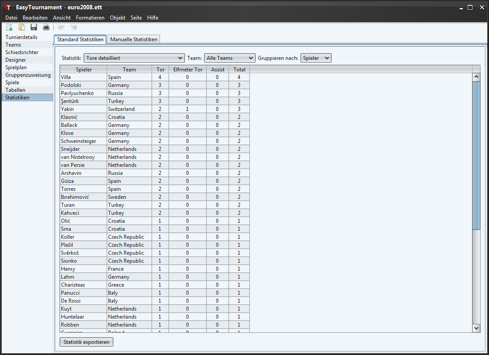

Über die drei DropDown-Listen lassen sich diverse Statistiken auswerten, sofern man die Spielberichte ausgefüllt hat.
Mit einem Klick auf die jeweilige Spaltenüberschrift lassen sie die Tabellen sortieren.
Anzahl "Tor-Punkte" die ein Team/Spieler bis zum Ende der Verlängerung gemacht hat (z.B. Football: 2 Touchdowns sind 12 Punkte).
Anzahl "Tor-Punkte" die ein Team/Spieler bis zum Ende des Spiels (inkl. Penaltyschiessen) gemacht hat (z.B. Football: 2 Touchdowns sind 12 Punkte).
Diese Statistik gibt es nur für Spieler. Anzahl "Tor/Assist-Punkte" die ein Spieler bis zum Ende der Verlängerung gemacht hat (z.B. Football: 2 Touchdowns sind 12 Punkte). Der Assist-Spieler erhält genau gleich viele Punkte wie der Schütze.
Diese Statistik gibt es nur für Spieler. Anzahl "Tor/Assist-Punkte" die ein Spieler bis zum Ende des Spiels (inkl. Penaltyschiessen) gemacht hat (z.B. Football: 2 Touchdowns sind 12 Punkte). Der Assist-Spieler erhält genau gleich viele Punkte wie der Schütze.
Anzahl "Tor-Punkte" pro Tor-Art (siehe Spielereignisse) die ein Team/Spieler bis zum Ende der Verlängerung gemacht hat (z.B. Football: 2 Touchdowns sind 12 Punkte).
Anzahl "Tor-Punkte" pro Tor-Art (siehe Spielereignisse) die ein Team/Spieler bis zum Ende des Spiels (inkl. Penaltyschiessen) gemacht hat (z.B. Football: 2 Touchdowns sind 12 Punkte).
Anzahl "Tor-Punkte" die ein Spieler bis zum Ende des Team/Spiels für ein gegnerisches Team gemacht hat.
Anzahl Strafen aller Strafen-Arten (siehe Spielereignisse) die ein Team/Spieler erhalten hat (nicht die Punkte die es/er durch Strafen verursacht hat!).
Anzahl Strafen pro Strafen-Art (siehe Spielereignisse) die ein Team/Spieler erhalten hat (nicht die Punkte die es/er durch Strafen verursacht hat!).
Zusätzlich lassen sich die Statistiken über die Schaltfläche "Statistik exportieren" als CVS (z.B. für Tabellenverarbeitungsprogramme wie MS Excel) oder HTML Datei speichern.